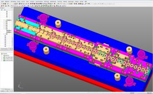
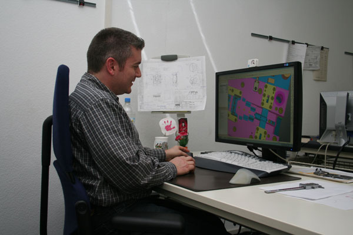

Mit Cimatron DieDesign schnell auf Kundenwünsche reagieren
- Saxonia Franke, mit Hauptsitz in Göppingen und weiteren Standorten in der Schweiz und in Slowenien, produziert seit 1981 Feinstanz- und Kunststoffspritzgießteile für die internationale Automobil-, Elektround Bauindustrie.
- 2007 entschied man sich, die im Werkzeugbau verwendete 2D-CAD-Lösung, durch eine durchgängige 3D-CAD/CAM-Lösung zu ersetzen. Die Entscheidung fiel auf Cimatron DieDesign. Zeitversetzt wurde für den Formenbau Cimatron MoldDesign angeschafft.
- „Zur Auswahl standen ... zwei Systeme. Für Cimatron sprach die Durchgängigkeit des Systems: Wir können damit in einer Umgebung schnell und präzise arbeiten. Zusätzlich haben wir uns in der Branche umgehört – und der Empfehlung für Cimatr on sind wir gerne gefolgt.“
Beherrschbare Komplexität wird zum Wettbewerbsvorteil
Wer schnell ein Muster eines komplexen Blechbauteils benötigt, kann bei Saxonia Franke in Göppingen fündig werden. Der Zulieferer fertigt pro Jahr rund 40 Folgeverbundwerkzeuge und kann auf ein umfangreiches Know-how zurückgreifen. Hilfreich ist dabei auch der Einsatz der CAD/CAM-Lösung Cimatron. Die Durchgängigkeit und Präzision dieses Systems erleichtert die Konstruktion der Werkzeuge und hält damit den Zeitbedarf für deren Entwicklung gering.

„Seit es 3D-CAD-Systeme gibt, werden auch Sicherungs- und Befestigungselemente komplexer“, berichtet Thomas Fray, Konstrukteur bei der Saxonia-Franke GmbH & Co. KG. Dementsprechend werden auch die Werkzeuge komplexer, mit denen das Göppinger Unternehmen Klammern oder Clipse für Anwender in der Automobil-, Elektro- und Baubranche herstellt. Das Angebot reicht von Stanzbiegeteilen aus Blech über den Kunststoffspritzguss bis hin zu Kunststoff- Metall-Verbindungen. „Insbesondere beim Bau der Folgeverbundwerkzeuge für die Blechteile können wir sehr schnell auf Kundenwünsche reagieren“, betont Wolfgang Faul, Leiter Konstruktion und Werkzeugbau, „kurzfristig können wir Musterteile für die Erprobung beim Kunden liefern.“ Diese Musterteile erstelle man dabei ‚werkzeugnah‘ – also auch ohne zu bohren oder zu fräsen – und habe damit schon den ersten Schritt zum später denkbaren Serienwerkzeug gemacht. Gerade bei komplexeren Teilen macht sich diese Vorgehensweise bezahlt. Denn mit den Erfahrungen aus der Musterteilfertigung lassen sich auch die Werkzeuge optimieren, beispielswiese über exaktere Werte für die Rückfederung.Dem Trend zu 3D-Systemen folgend – und weil sich vieles in 2D gar nicht mehr umsetzen lässt –, stieg auch Saxonia-Franke vor rund vier Jahren von einer 2D- Lösung kommend auf das 3D-CAD/CAM-System Cimatron der Ettlinger Cimatron GmbH um, ein komplettes Werkzeug für den Formen- und Werkzeugbau. Komplexere Oberflächen lassen sich auf diese Weise nun an den inzwischen vier Arbeitsplätzen direkt auf den Stempel übernehmen. „Zur Auswahl standen damals zwei Systeme“, erinnert sich Wolfgang Faul. „Für Cimatron sprach die Durchgängigkeit des Systems: Wir können damit in einer Umgebung schnell und präzise arbeiten.“ Mit im Fokus hatte man dabei neben dem Bau von Folgeverbundwerkzeugen bereits den Formenbau für Kunststoffteile – auch hier bot die Ettlinger Lösung durchgängige Funktionalität und darüber hinaus eine Software zum Drahterodieren. „Zusätzlich haben wir uns in der Branche umgehört – und der Empfehlung für Cimatron sind wir gerne gefolgt.“
Zeitbedarf für Werkzeugkonstruktion bleibt minimal
Dass die Göppinger aufgrund der Durchgängigkeit der CAD/CAM-Lösung heute Folgeverbundwerkzeuge sehr schnell konstruieren können, sei ein „nicht zu unterschätzender Vorteil“, führt Wolfgang Faul aus. „Die Durchlaufzeiten für ein Projekt liegen in der Regel bei zehn bis zwölf Wochen.“ Und das trotz der stetig steigenden Anforderungen. „Insbesondere die erlaubten Toleranzbreiten werden immer enger – entsprechend präzise müssen unsere Werkzeuge sein.“ Dass Falten- oder Rissbildung tabu sind, versteht sich von selbst, aber auch Druckstellen müssen in manchen Projekten schon vermieden werden. Die Basisdaten erhalten die Saxonia-Franke-Konstrukteure überwiegend in Form von STEP-Dateien. „Damit können wir problemlos arbeiten“, sagt Thomas Fray. Auch Catia- sowie Autocad-Daten könne man einlesen. Catia ist – wegs Kundenaufträgen – im Haus und Autocad das alte 2D-System. Die Werkzeugkonstruktion erfolgt aber ausschließlich in Cimatron. Für das System bietet der Hersteller auch Direktschnittstellen an sowie einen Konvertierungsservice, wenn man nur gelegentlich Dateien bearbeiten muss. Sobald die Daten dann im CAD/CAM-System sind, lassen sich die Umformstufen erzeugen und bei Bedarf unterschiedliche Versionen validieren, um schließlich die optimale Bearbeitungsfolge zusammenzustellen. Die fertigen Folgeverbundwerkzeuge sind bei den Göppingern je nach Bauteil bis zu 4 m lang und umfassen in dann 5 Modulen rund 40 bis 50 Bearbeitungsschritte.

„Wir kommen mit der Systemumgebung gut zurecht, es gibt viele praktische Funktionen“, fährt Fray fort. Gerade dann, wenn man vom Kunden Daten aus einem Fremdsystem bekomme, gebe es ja gern Konvertierungsfehler. „Offene Kanten beispielsweise zeigt das Programm leicht erkennbar an und bietet dazu Reparaturfunktionen an, um sie zu schließen – das ist sehr leistungsfähig und uns schon bei der Systemauswahl aufgefallen.“ Und im Gegensatz zum 2D-System, das sich jeder Mitarbeiter relativ weit individuell angepasst habe, nutze man zudem im Wesentlichen die Standardkonfiguration. „Das ist vor allem dann von Vorteil, wenn beispielsweise ein Rechner ausfällt und man auf den Platz eines Kollegen ausweichen muss – deswegen ist mir dieser Punkt wichtig.“ Rund zehn Tage wurde jeder Mitarbeiter übrigens zu Beginn geschult, wobei der größte Teil auf den 3D-Umstieg entfiel. Für das eigentliche Werkzeugmodul genügten dann zwei Tage.
Teilevielfalt und Komplexität als Herausforderung
Aufgrund der Teilevielfalt wird bei Saxonia- Franke für fast jedes Teil ein entsprechendes Werkzeug konstruiert und gefertigt, identische Teile gibt es fast nie. „Wiederverwendet werden lediglich die Werkzeuggestelle, also etwa Platten und Säulenführungen“, erläutert der Konstrukteur. Da die Bearbeitungsstufen und -folgen immer neu definiert werden, haben die Göppinger aber inzwischen so viel
Erfahrung, dass dies ein klarer Wettbewerbsvorteil ist. „Denn die immer komplexeren Teile sind entsprechend schwerer zu fertigen – und viele kommen auch gezielt mit Problemen zu uns“, sagt Thomas Fray. „Wir sind da ganz offen und können im Zweifel auch einmal Musterteile liefern, um die Fertigung am Laufen zu halten.“Kritischer sieht man bei Saxonia-Franke das Thema Simulation. Cimatron verfügt über integrierte FEM-Funktionen, mit denen sich der Anwender vorab ein Bild von der Formbarkeit des Bauteils und der Komplexität des Umformprozesses machen kann.

„Das System ist in der Lage, Blechabwicklungen zu simulieren, aber die Komplexität der zu fertigenden Teile spielt hier eine entscheidende Rolle“, erläutert Fray. „Mit zunehmender Komplexität wird es immer schwieriger, alles zu simulieren." Man habe sich allerdings mehrere Systeme diesbezüglich angeschaut, gerade bei FEM-Abwicklungen könne das keines in vollem Umfang leisten. „Letztlich bleibt hier nur der Weg, über den Musterbau entsprechende Versuche durchzuführen – das muss man einfach ausprobieren und auf Erfahrungswerte zurückgreifen, beispielsweise bezüglich Biegeradien oder der Rückfederung.“ Meistens wissen die Konstrukteure auch bereits beim ersten Blick auf ein Bauteil, an welchen Stellen Falten und Risse ein Problem werden könnten. Gefragt, welche Funktionalität denn noch fehle und was auf der Wunschliste ganz oben stehe, hat der Konstrukteur sofort eine Antwort parat: „Ein Tiefziehmodul, um Töpfe zu ziehen.“ Das System solle dann angeben, welcher Platinendurchmesser erforderlich ist und wie viele und welche Ziehfolgen man brauche – „das fehlt bislang“. Bewährt hat sich in Göppingen die 3D-Arbeitsweise – vor allem in Bezug auf die Arbeitsprozesse. „Besonders bei den komplexeren Bauteilen ist unsere Konstruktionsbesprechung nun deutlich einfacher geworden“, berichtet Konstruktionsleiter Wolfgang Faul. Dann versammeln sich Konstrukteure und der Meister aus dem Werkzeugbau vor dem Bildschirm. „Die 3D-Ansicht erleichtert die Diskussion, weil man im Zweifel ganz einfach das Teil einmal drehen kann.“ Man erkenne einfach viel mehr vorab, so Thomas Fray abschließend.
(Michael Corban, CAD-CAM REPORT)

Kurz gefasst
Die Saxonia-Franke GmbH & Co. KG wurde im April 1981 gegründet und ist Zulieferer der internationalen Automobil-, Elektro- und Bauindustrie. Wenn man auf der Suche nach einer Lösung im Bereich Befestigungsund Sicherungselemente ist, findet man bei Saxonia-Franke den kompetenten Partner für die Realisierung! In enger Zusammenarbeit mit dem Kunden wird genau das Teil entwickelt, das den jeweiligen Anforderungen und Ansprüchen gerecht wird!
Angeboten werden Komplettlösungen, von der Entwicklung komplizierter Teile bis hin zur Montage von Baugruppen. Saxonia-Franke fertigt Präzisions-Stanz-Biegeteile ebenso wie Kunststoff-Spritzteile.Produziert werden die Sicherungen, Klammern, Bolzen und Clipse auf modernsten Anlagen, wobei das Durchschnittsalter der Maschinen bei ca. 4 Jahren liegt. Mit qualifizierten und motivierten Mitarbeitern bürgt dies für die hohe Qualität der gesamten Produktpalette, die mehr als 2000 Teile umfasst.
Bei Saxonia-Franke erhält man schnelle und wirtschaftliche Lösungen, die auf die individuellen Bedürfnisse und Ansprüche zugeschnitten sind. Neben dem Stammsitz des Unternehmens in Göppingen betreibt Saxonia Franke, weitere Standorte in der Schweiz und in Slowenien.
Weitere Infos: www.saxonia-franke.de
Wir kommen mit der Systemumgebung gut zurecht, es gibt viele praktische Funktionen. Offene Kanten beispielsweise zeigt das Programm leicht erkennbar an und bietet dazu Reparaturfunktionen an, um sie zu schließen, das ist sehr leistungsfähig und uns schon bei der Systemauswahl aufgefallen.